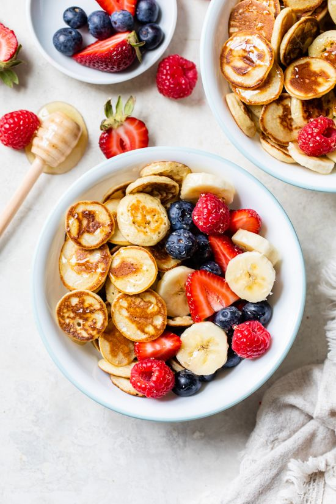

Bienvenidos al apartado de Comidas saludables
En un mundo cada vez más consciente de la importancia de llevar un estilo de vida saludable, las comidas saludables se han convertido en una opción popular y deseada. Estas deliciosas y nutritivas preparaciones están diseñadas para proporcionar una alimentación equilibrada, brindando a nuestro cuerpo los nutrientes que necesita para prosperar. Las comidas saludables están llenas de colores vibrantes, ingredientes frescos y sabores exquisitos que deleitan nuestro paladar sin comprometer nuestra salud. Desde ensaladas llenas de vegetales frescos hasta platos principales ricos en proteínas magras y opciones de postres indulgentes pero conscientes, descubrirás un mundo de sabores que alimentarán tanto tu cuerpo como tu alma.
Aqui te dejaremos algunas de nuestras recetas favoritas.
Como primera opcion podemos encontrar El Healthy Pancake Cereal , La cual fue brindada gracias a SkinnyTaste
Los ingredientes para su elaboracion son:
Frutas y verduras
Alimentos refrigerados
Alimentos horneados y especias
Aceites y Vinagres
Lácteos